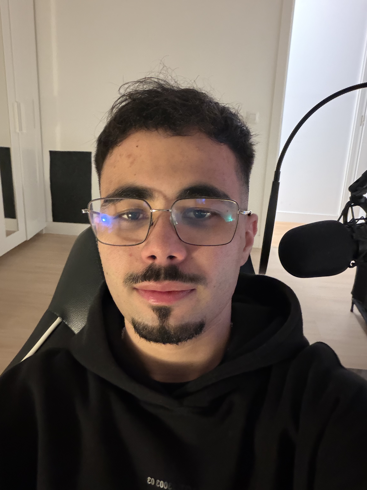
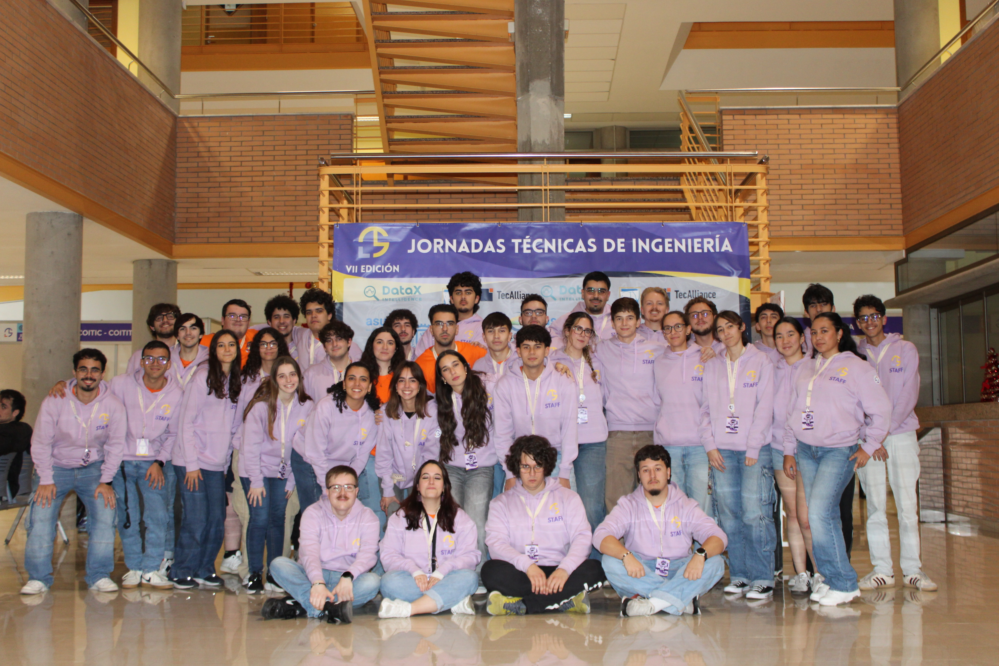
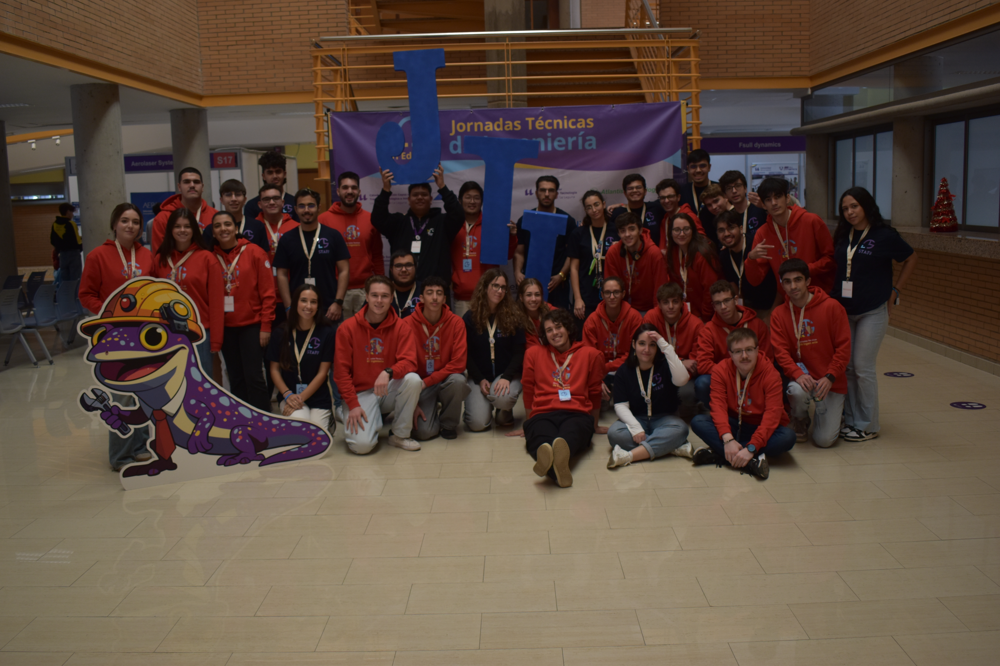
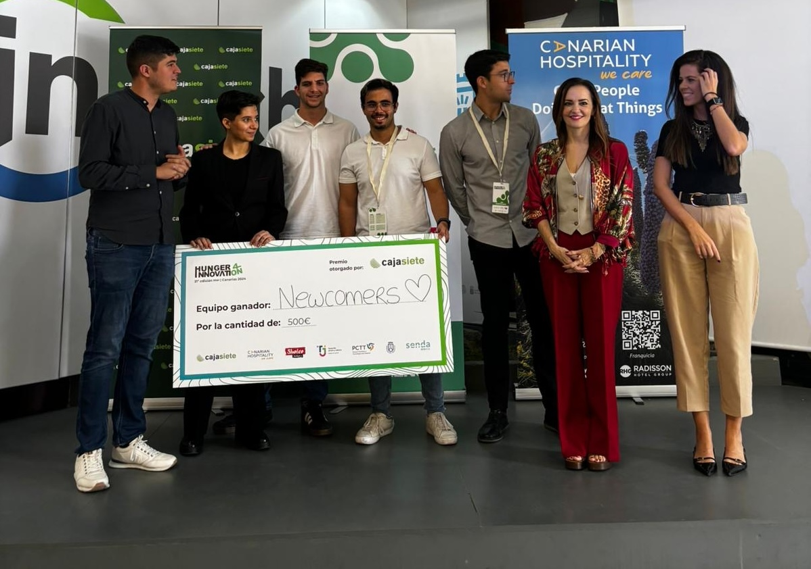

02.2026 — Actualidad
Codirector
Jornadas Técnicas de Ingeniería
Santa Cruz de Tenerife
Gestión de material, personal y tiempo, además de comunicación con entidades colaboradoras.
Ingeniero informático
Desarrollo productos y procesos tecnológicos eficientes combinando visión Full Stack, inteligencia artificial y análisis de datos.

01 / Sobre mí
Soy estudiante de Ingeniería Informática con experiencia en gestión de proyectos, análisis de problemas y coordinación de equipos y eventos.
Me interesa transformar retos complejos en soluciones ordenadas, útiles y medibles, sin perder de vista a las personas que las utilizan.
02 / Experiencia
Codirector
Santa Cruz de Tenerife
Gestión de material, personal y tiempo, además de comunicación con entidades colaboradoras.
Organizador
Santa Cruz de Tenerife
Organización de actividades y material durante la preparación y realización del evento.

Organizador
Santa Cruz de Tenerife
Organización de actividades y material durante la preparación y realización del evento.

Analista corporativo
Santa Cruz de Tenerife
Estructuración de soluciones ante un problema de clientes de Caja Siete.

Árbitro
Santa Cruz de Tenerife y alrededores
Gestión de partidos oficiales, resolución de conflictos bajo presión y redacción de informes técnicos.
03 / Proyectos
Una selección de proyectos desarrollados. Estos textos son provisionales y puedes sustituirlos por tus proyectos reales.
Proyecto Videojuego
Videojuego de tipo roguelite basado en la franquicia de Transformers.
Inteligencia artificial
Sistema inteligente para la gestión de personal y creación de horarios de manera automatizada para la Dirección General de la Hermodonación y Hermoterápia.
04 / Formación
2022 — Actualidad
Universidad de La Laguna
San Cristóbal de La Laguna
05 / Capacidades
06 / Contacto
Datos de contacto
+34 673 36 53 86
38591 Santa Cruz de Tenerife